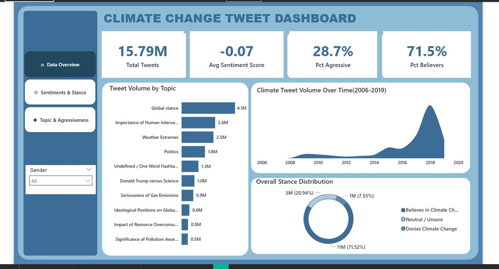
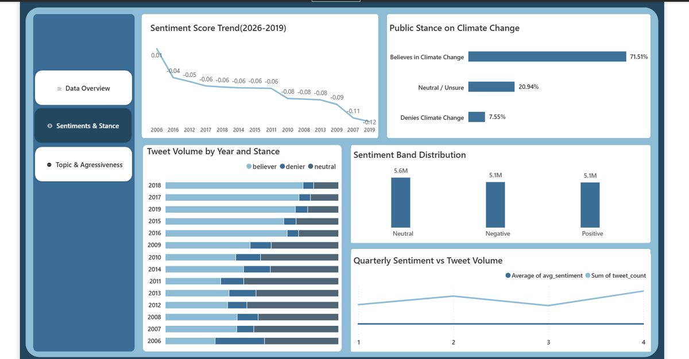
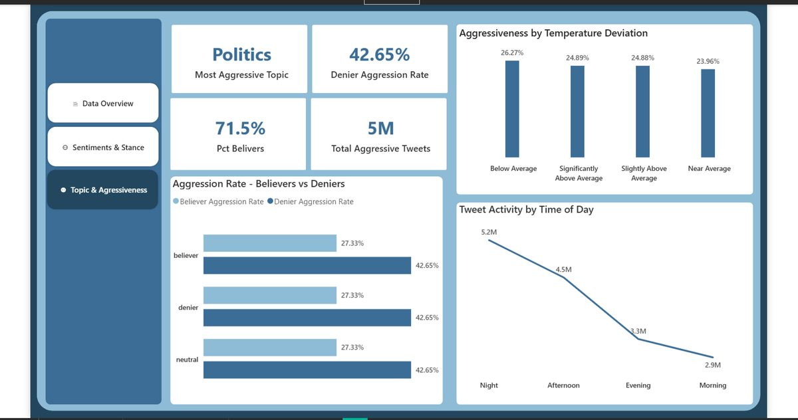

A sentiment and stance analysis of 15.79 million tweets about climate change spanning 2006–2019 — tracking sentiment over time, the believer/denier/neutral split, topic volume, and which topics drew the most aggressive replies.
15.79MTotal Tweets
-0.07Avg Sentiment Score
28.7%Pct Aggressive
71.5%Pct Believers

Data Overview — tweet volume by topic and over time, overall stance

Sentiments & Stance — sentiment trend and tweet volume by year and stance

Topic & Aggressiveness — most aggressive topics and tweet activity by time of day
Key Findings
Tweet volume peaked sharply around 2018, far above any earlier year.
71.5% of tweets expressed belief in climate change vs. 7.6% denial.
Politics is the most aggressive topic discussed.
Tweet activity and aggression are highest overnight and fall off toward morning.